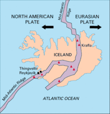
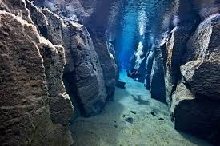
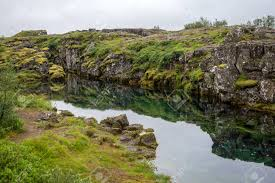

La fisura de Silfra es una grieta llena de agua entre las placas tectónicas de América del Norte y Eurasia, donde los dos continentes se separan el uno del otro. El agua viaja desde el glaciar Langjökull a través de la roca de lava porosa durante un viaje que toma entre 30 y 100 años antes de filtrarse en la fisura.
La formacion de Silfra y el valle de Fingvellir es consecuencia de la corriente tectónica de las placas norteamericana y euroasiática. Cada año, las placas se separan una distancia adicional de 2cm, lo que da lugar al incremento de la tensión entre las placas y la masa de tierra superior. Esta tensión se libera por medio de terremotos que se repiten cada diez años, aproximadamente. Durante estos terremotos surgen nuevas fisuras y huecos en Fingvellir. Silfra es una de las mayores fisuras, que comenzó como una cuerva subterránea. El sitio está en norde del lago Fingavallavatn.
Las cuevas en Silfra se formaron gracias a terremotos. Con cada terremoto, bloques y rocas caen en la fisura haciendo más ancha y profunda a Silfra con el paso del tiempo.
Hace unos miles de años la lava de la erupción del volcán Sjaldbreidfur bloqueó el río. Por ello, cuando el hielo del glaciar de Langjökull se derrite, el agua se filtra bajo tierra en roca de lava porosa. por ese medio, al agua le cuesta entre 30 y 100 años viajar al lago Fingvallavatn en el parque nacional de Fingvellir. Esta agua subterránea es potable.
Silfra, gracias a su ubicacion en el lago Fingvallavatn, contiene agua fría y cristalina, que es un imán para buceadores por su visibilidad e importancia geológica. Los buceadores literalmente nadan entre continentes.
El cañón tiene poca profundidad cerca de la orilla pero esta, junto con la anchura, crece al alejarse de la orilla.
